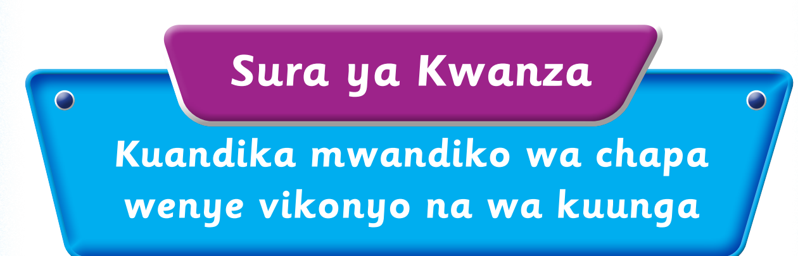

Nakili maneno tisa ya mfano kwa mwandiko wa chapa wenye vikonyo; tumia eneo la kuandikia, kibodi au Breli.
msichana · kimbia · shule · mtu · cheza · ng'oa · daraja · ghorofa · dhahabu

Kuandika maneno kwa mwandiko wa chapa wenye vikonyo Ninaandika maneno kwa mwandiko wa chapa wenye vikonyo. Tazama mifano hii: kitabu ngedere nyanya Zoezi la kwanza 1. Nakili maneno yafuatayo kwa mwandiko wa chapa wenye vikonyo: msichana kimbia shule mtu cheza ng' oa daraja ghorofa dhahabu
Nakili maneno tisa ya mfano kwa mwandiko wa chapa wenye vikonyo; tumia eneo la kuandikia, kibodi au Breli.
msichana · kimbia · shule · mtu · cheza · ng'oa · daraja · ghorofa · dhahabu